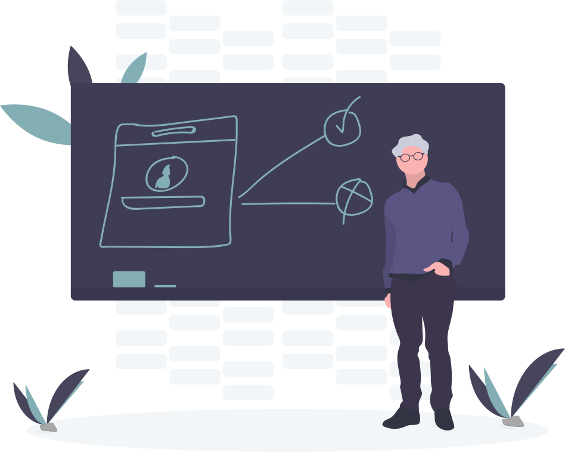
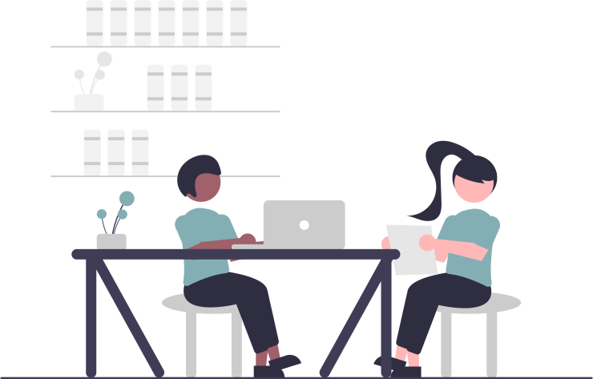

What do you get from GROW?
Support
Get answers to your questioins
Encouraging environment by the fellow students and your coordinators.

Network
Meet new people
Be surrounded and get inspired by people who has similar interests and goals.
Workshops
Keep improving
Where you learn how to manage a business. You can inmprove your knowledge from lawyers, accountants etc.

Working space
Have an office in the main campus
Get and office where you can work on your business ideas in a supportive atmosphere.